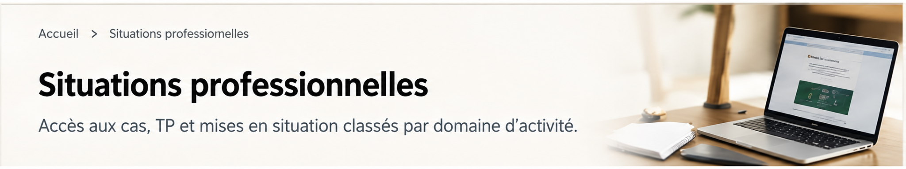

Situations professionnelles
Accédez directement aux TP et cas disponibles.
Situations professionnelles
Choisissez le cas sur lequel vous allez travailler
Accédez directement au cas lorsqu'il est unique. Lorsqu'un domaine comporte plusieurs TP, dépliez la liste.
◆
Gestion des risques · TP transversal
1083 — Sécuriser la croissance d’une PME industrielle et omnicanale
6 situations · 31 tâches · diagnostic global, SST, cyber/RGPD, risque client, fournisseurs et qualité.
Ouvrir →
↔ GRCF · Plusieurs cas Relation clients et fournisseurs Choisissez le TP correspondant à l'activité travaillée. Choisir
Papeterie ServicesActivité 1.1 · Prospection→
HEXAActivité 1.1 · Prospection→
Pépinières SIROTActivité 1.2 · Administration des ventes→
Bainu ErrandoneaActivité 1.3 · Relation client→
Technord ServicesActivité 1.5 · Achats et investissements→
Voir l'ensemble de la GRCFRéférentiel, activités et autres TP→